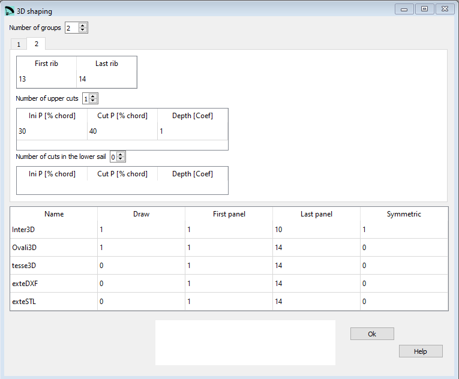

3D shaping¶
The model of 3-Shaping proposed by the Laboratori, consists in making one or two transverse cuts in the upper surface, near the leading edge, and another optional cut on the bottom surface.
The edges of the transverse cuts will be modified from the straight line into an arc of a circle. In this way, we can “add fabric” lengthwise and we can control the ovalization and the tension in this direction.
Ovalization in transverse direction is achieved via the Skin tension.
In summary, we can control the amount of tissue and tension in transverse and in longitudinal direction near the nose, where the curvatures are greatest.
{kind=link}
Raw data:
1
1
groups 2
group 1 1 12
upper 2 1
1 25 33 1.0
2 33 44 1.0
lower 0 1
group 2 13 14
upper 1 1
1 30 40 1.0
lower 0 1
* Print parameters
Inter3D 1 1 10 1
Ovali3D 1 1 14 0
tesse3D 0 1 14 0
exteDXF 0 1 14 0
exteSTL 0 1 14 0
Number of groups¶
3D shaping is an optional section.
If you do not want to define/ use these parameters set the Number of groups value to 0.
First and last rib¶
You can define several groups with individual 3D shaping parameters. With the first and last rib parameters you define where in the wing the settings must be applied.

Number of upper cuts¶
You can define max two cuts in the upper sail. Number and position of cuts do control the 3D shaping.
Ini P¶
The wing profile is defined by a number of x,y coordinates defining each a point on the profile edge. The Ini P is the number of the point where the Zone of influence starts. To derive the point number open the profile file either with a CAD or a text editor. To count the respective points you start at the trailing edge and then you must follow first the upper sail towards the leading edge.
Cut P¶
The cut point is the next point in the definition. Again here it is defined in the number of points of the profile definition starting from the trailing edge.
Depth¶
With the depth coefficient you control how much fabric is added or removed.
The coefficient range starts at -1.0 and runs until +1.0.
A value of 0.0 means no fabric is added or removed.
Number of cuts in the lower sail¶
There’s a maximum of one cut in the lower sail you can define.
The definition of the three values Ini P, Cut P and Depth depth is identical to the values of the upper sail.
Name¶
The names are fix, do not alter them!
Inter3D: representation of the intermediate airfoils in 3D lep-3d.dxf
Ovali3D: representation of the intermediate ovalized airfoils in 3D lep-3d.dxf
tesse3D: representation of panel tessellation in 3D lep-3d.dxf
exteDXF: representation of panels tessellation in 3D in a new external DXF file (possible use in CFD analysis)
exteSTL: representation of panels tessellation in 3D in a new external STL file (used with programs of 3D modelling as OpenSCAD or FreeCAD)
NOTE: only the first line is fully implemented in lep until now. The following four lines do not have an effect yet, but you must define them for compatibility reasons!
For each of the data lines you must define the parameters as described below.
In the following section you define if an how the 3D Shaping data should be printed.
First panel¶
Number of the first airfoil to draw
Last panel¶
Number of the last airfoil to draw
Symmetric¶
0: it indicates to draw with symmetry
1: draw only one side
A more detailed description you can find here Laboratori d'envol website.